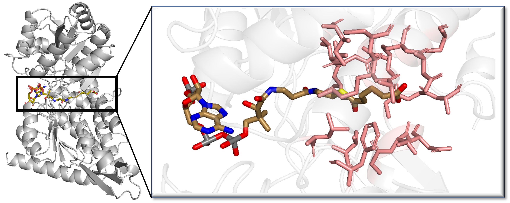
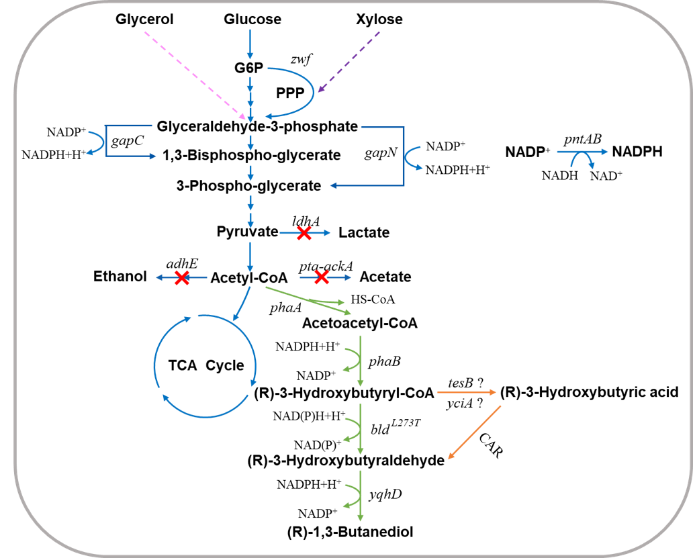
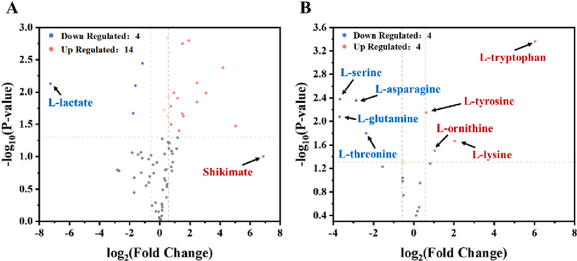

01 Enzyme Design
酶发现与设计
我们利用序列和功能数据提出候选，再结合实验研究酶的催化性能和功能边界。

Research
我们从目标反应和产物出发，设计酶与途径，并在细胞和培养条件下检验工程方案。
01 Enzyme Design
我们利用序列和功能数据提出候选，再结合实验研究酶的催化性能和功能边界。

02 Pathway Engineering
从目标产物出发，选择可组合的反应与酶，在微生物中组装并优化非天然反应模块。

03 Microbial Cell Factories
结合组学与发酵分析定位生产瓶颈，在底盘中协调前体供给、转运和调控。
